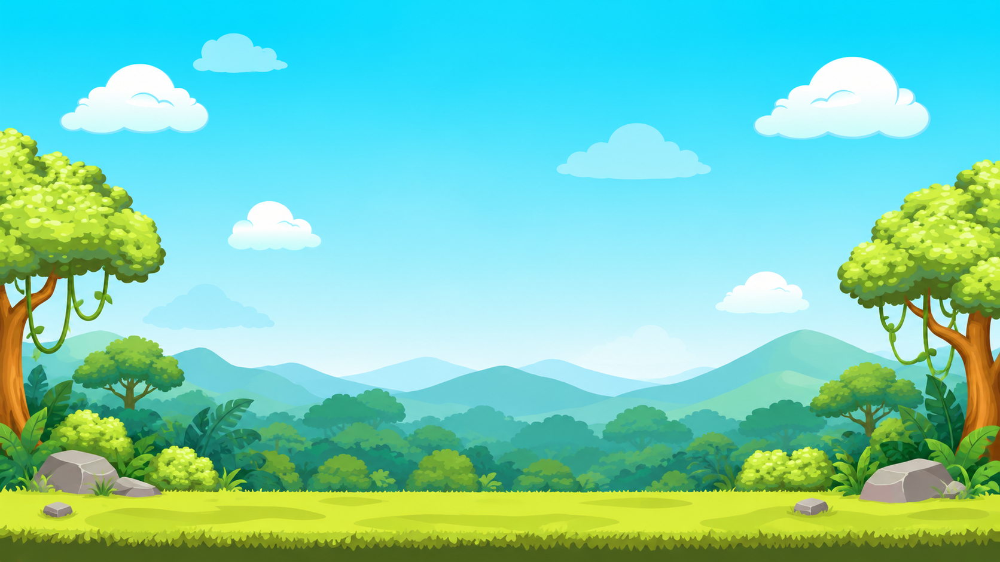

Explorador
Saludo con el brazo; cuerpo fijo.
Prueba visual: personajes, colores y controles.

Mira las imágenes y elige al guacamayo.
Pista: es un ave con pico curvo, alas y una cola larga.
El guacamayo es un ave de la selva. Tiene un pico curvo y una cola larga.
Usa «Reproducir saludo» para un ciclo breve. Los movimientos decorativos empiezan en pausa.
Saludo con el brazo; cuerpo fijo.
Balanceo suave en reposo.
Respiración suave en reposo.
Flotación suave; alas sin aleteo.
Las etiquetas permanecen visibles. Señas aparece desactivado hasta contar con el video correspondiente.
Esta es una muestra de diseño. La accesibilidad de la aplicación final deberá comprobarse en Unity y con sus usuarios.